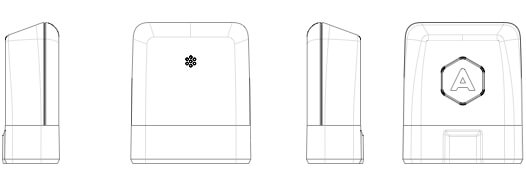

Onboard computers have been standard for nearly 20 years now. And yet, they’re still relatively closed environments. Some of today’s vehicles come with their very own smartphone app, providing you with insight into the car’s health, fuel consumption, and more. But if you’ve got a car from a time passed, you’ll be left guessing.
We set out to create a product that gives you access to your car's data and makes driving more safe, efficient, and fun.
We looked at fundamental problems around how to improve the driver experience, and Automatic today solves a lot of them in a simple, easy-to-use, seamless experience.
Automatic learns about your driving style and gives you subtle audio cues when you do things that waste gas. It can explain what that pesky check engine light means, call 911 for you if there is an accident, and even remember where you parked your car.
Automatic is powered by a hardware adapter that was designed and engineered in-house. The Automatic Link plugs into the same port your mechanic uses when you take your car in for service. It’s easily accessible near the steering wheel.
The Link talks to your car’s onboard computer and syncs with your iOS and Android app to enhance your driving experience.
As head of design, I provided creative direction and worked very closely with independent contractors to develop the industrial design and brandmark.
The design of the Automatic adapter was carefully considered to create an inviting yet sophisticated visual language. This made it stand out from other car accessories in the market.
A warm gray color palette was selected to tie everything together, mimicking the feel of steel and aluminum. The trapezoidal shape of the OBD II connector transitioned seamlessly into the rest of the adapter, making it an intentionally designed showpiece for your car's dashboard.
After plugging the Automatic Link into your car, the companion app is where all the magic happens. In the app, you can learn why the check engine light came on, browse your weekly trips, learn about your driving habits, and more.
Because Automatic connects to your car's computer, it can learn about your driving habits and teach you how to improve your driving in order to save on gas.
For example, we used the accelerometer in the app to detect when you make a hard acceleration or hard brake and alert you by playing a chirp in the device.
I designed a timeline that shows your weekly trips. Tapping a trip card expands it and reveals a map showing the exact route and where your driving performance excelled.
However, I quickly found myself repeating a lot of information —the end destination of a trip is typically the beginning of the next trip.
In order to remove redundancy, I developed a system that used a fixed car over the scrolling timeline. The car acted as a cursor for the UI —it highlights a "selected" trip and changes the trip date and time accordingly.
The car quickly became a staple of the design. Our users had a strong emotional reaction to it and directly related it to their own car —one of their most prized possessions. As a result, the car became a good vehicle for introducing delight into the product.
For example, the car's lights turn on and off depending on which direction the user scrolls. We also allowed users to change the color of the car. Finally, for special occasions, we changed the car model to something more seasonal, like a Santa sled for Christmas.
Welcoming new users to Automatic was no small task. I designed the introductory product tour and a carefully crafted setup process, which walked you through connecting your Link to your car and pairing it with your phone.
When designing the retail package for Automatic, it was important to showcase the product's features at a glance, while clearly explaining a complex system that involved both hardware and software.
For the front cover, we decided to focus on the connection between the Automatic adapter and the Automatic app. We chose the Mini Cooper because it embodied the spirit of our product –a car beloved by many for its elegance and simplicity.
Opening the front flap felt like looking inside your favorite car. We showed how the adapter would connect to the car's OBD port, the app UI, and the Automatic adapter floating in the right pane.
One of the biggest challenges of working on Automatic was how to describe the product and quickly communicate the complex relationship between hardware, firmware, and software to our users. In order to do this, I helped craft a story behind four main value propositions:
We repeated these four points in all of our promotional materials, including the website and promotional video.
We knew that the website was the best place to thoroughly explain how Automatic works and why a user should invest in it. So, we focused most of our efforts on making the copy crystal clear and designed the website around delineated sections that explain each feature in rich detail.
The website handled a fairly robust checkout system. We checked for car compatibility, supported multiple payment systems such as paypal, amazon, and credit/debit card, and directed users to our customer success portal.
Early on in the process, we decided to produce a video to announce Automatic. I worked with the rest of the team to write a script that succinctly communicated the value of the product and inspired a sense of possibility for this technology. I was also in charge of the art direction and motion graphics.
We talked a friend into letting us borrow her Mini Cooper and filmed her driving across the beautiful vistas of Sausalito, California. Then, Ljuba sat at the offices of our friends at Adaptive Path to record the voice-over for the video.
We obsessed over every detail to deliver something that accurately represented our team, diligently caring about every detail along the way.
The video exceeded our expectations. It has been viewed over 400,000 times and it was a great first step for positioning Automatic on the radars of thousands of drivers.
I joined Automatic and moved to San Francisco because I fell in love with the problem brought to me by three Berkeley grads. Joining a tiny team of four, in a small office in the middle of Market Street, was not glamorous but one of the most rewarding experiences I've had.
There's nothing quite like building a product you envisioned from the ground up. We were building something because we wanted to make the world a better place and we thought we could do it through improving the driver experience.
Two years later, I found myself feeling good about the work I’ve done and in search of new challenges. So, I decided to part ways with the team that was once four in a Market Street office to now over 70 in a larger space.
Since my departure, Automatic has blossomed into a connected car platform and started to implement the bigger ideas that we thought were impossible in that small office. I am nothing but proud of their continued success and can't help but root for them from the sidelines.